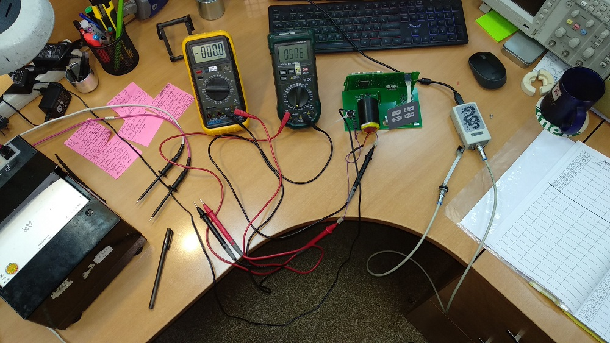
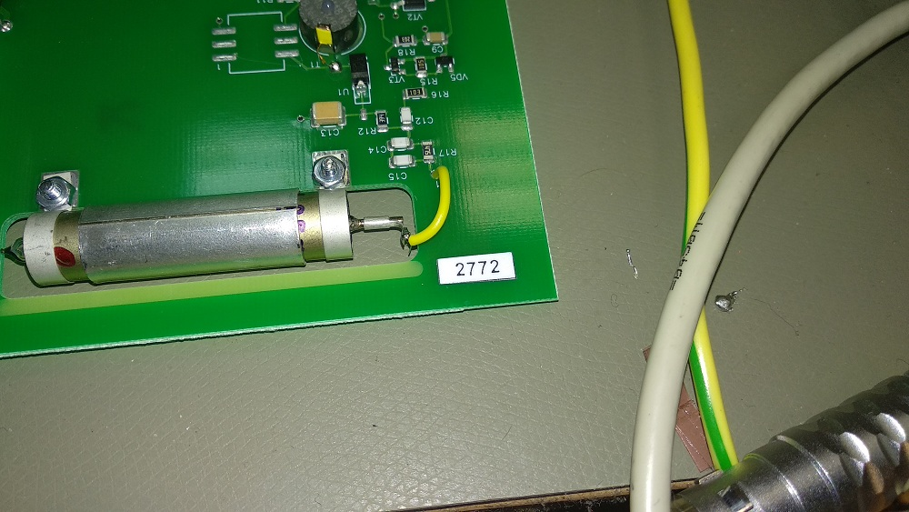
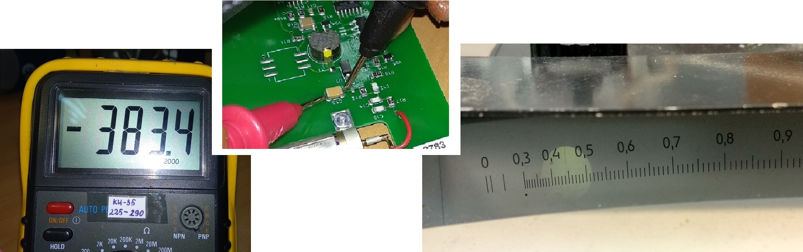
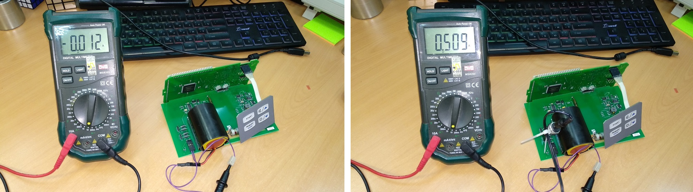
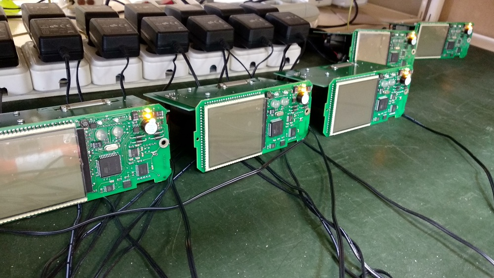

↑
БОИ, БОИ-2. Преобразователь напряжения

- Присвоить номера (приклеить на платы). В перечень записать дату, количество блоков отданных в настройку
и ФИО регулировщика. Вставить аккумулятор — не подключать — потом удобнее

- Измерить высокое напряжение вольтметрами : универсальным ( мультиметром Rвх=10 МОм ) Uвыс=380 В,
статическим (Rвх= 1011 Ом) Uвыс=440В. Удобнее использовать два мультиметра: один для измерения напряжения,
другой — для измерения тока

- Проверить ток потребления ≈ 11 мА (30 мА с двойной подсветкой) и ток заряда ( ≈ 510 мА)

- Записать данные в перечень
- Подключиться к компьютеру(Подключение — через USB-адаптер, программа — Background Calibration).
Записать в память номер блока.
- Проверить скорость счета СИ-19Г на фоне, должно быть 0,18 с-1

- Поставить приборы на зарядку. Заряжать пока не погаснет оранжевый индикатор

- Включить, поставить 4 режим
(удерживать "memory" появится ".2" нажать 2 раза -- отобразится ".4")
- Отключить звук (кнопка "звук")
- Не выключать прибор!
- Отдать на линейку (приработку)
- Отдать на корпуса
- Отдать на УДГ, на приработку и калибровку